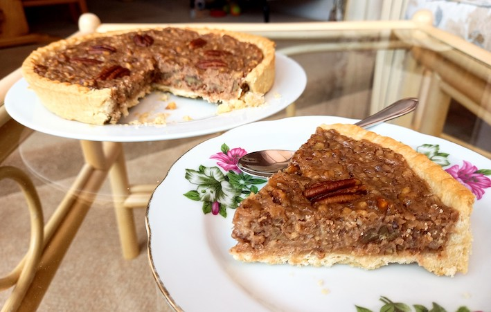

Nutty Pecan and Hazelnut Pie
Ingredients:
-
1/4 Cup of Brown Sugar
-
1 Cup of Finely Chopped Pecans
-
1/2 Cup of Finely Chopped Hazelnuts
-
2 tbsp of Vegan Butter
-
1/4 Cup of Pure Maple Syrup
-
3/4 Cup of Unsweetened Full-fat Coconut Milk
-
2 tsp of Vanilla Extract
-
3 tbsp of Corn Starch
-
Pinch of Fine Sea Salt
-
1 (9-inch) Prepared Pie Crust
-
Some Pecan Halves for Decoration.

Method:
-
Preheat the oven. Then parbake your prepared pie crust for 7 minutes. Set it aside to cool.
-
In a measuring cup, combine the coconut milk and cornstarch then whisk until smooth.
-
In a saucepan, melt the vegan butter over medium heat.
-
Add the pecans and hazelnuts and toast in the pan for about 30 seconds while stirring continuously.
-
Pour in the maple syrup, sugar, coconut milk mixture, vanilla and salt. Whisk until smooth.
-
Remove from heat then pour the mixture in the pie crust until filled to about 1/4-inch of the top of the crust.
-
Bake in the oven for about 30 minutes, or until filling appears mostly firm when you gently jiggle it.
-
Cool on the counter for 2-3 hours then cover and store in the refrigerator for at least 8 hours, ideally overnight.